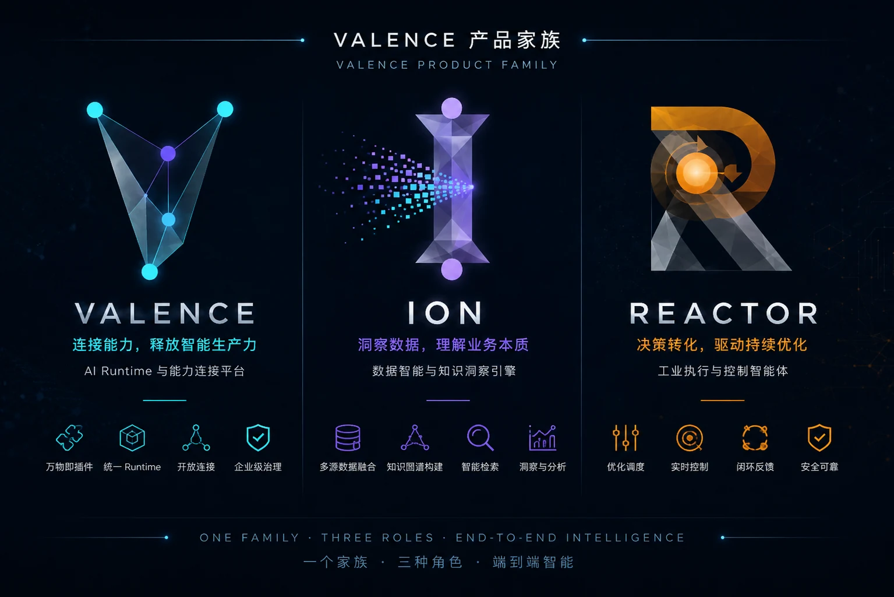
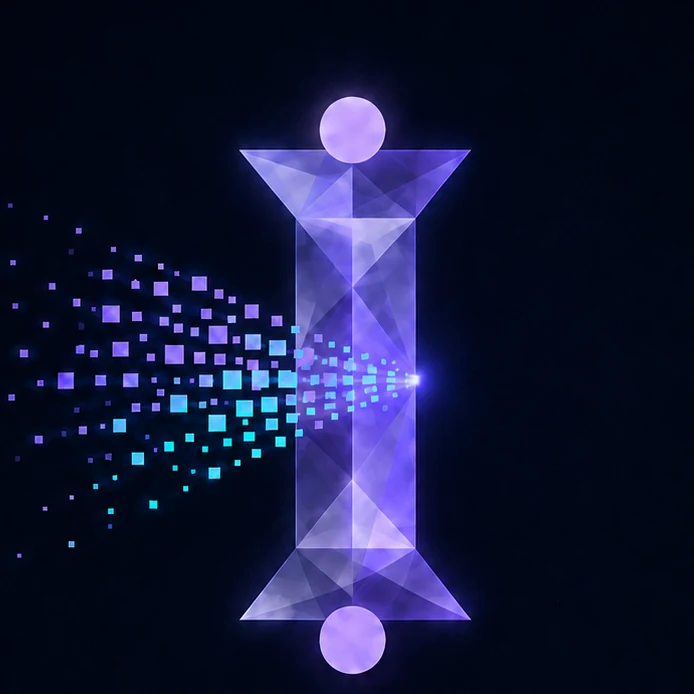
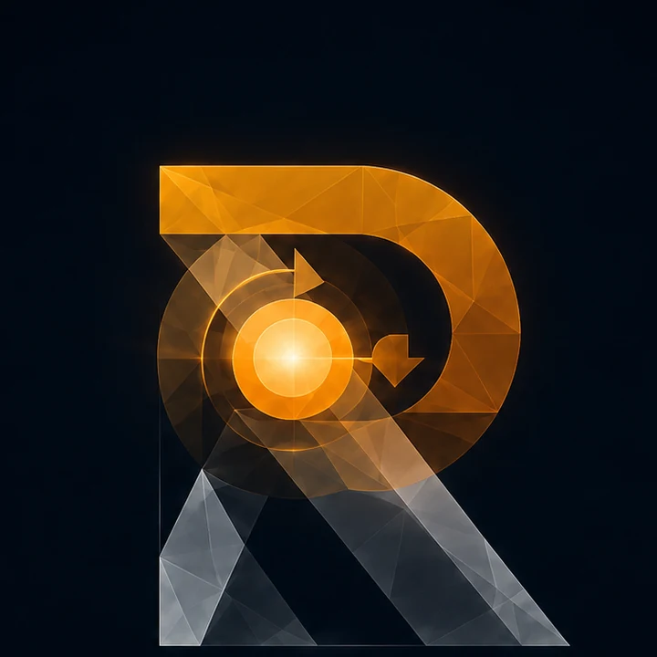
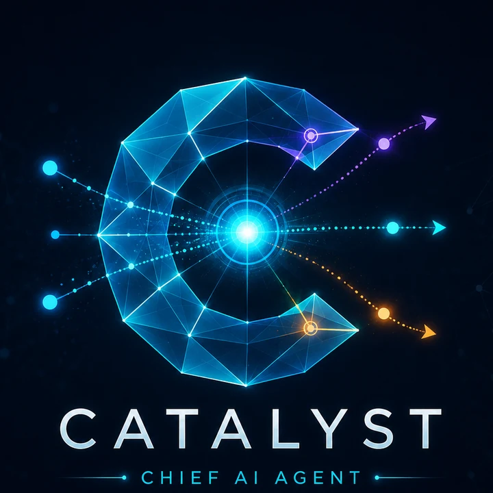

CORE RUNTIME
VALENCE
统一管理 Pod 上下文、Agent、专家、Skill、任务板、自动化与运行结果，让一次请求可以跨越多轮协作持续推进。
VALENCE 以 Catalyst 为调度中枢，把对话、任务、专家、Skill 与自动化连接成持续运行的工作现场；ION 与 Reactor 作为专业插件接入，也可通过开放接口嵌入现有系统。

VALENCE 承载协作、上下文与任务生命周期；ION 提供可治理的企业本体与语义资产；Reactor 把业务目标转化为约束、模型与可执行方案。
统一管理 Pod 上下文、Agent、专家、Skill、任务板、自动化与运行结果，让一次请求可以跨越多轮协作持续推进。

把标准字段、指标口径、领域知识与分析 Skill 组织为版本化本体资产，为每次问数保留口径、字段与血缘证据。

把对象、目标、约束与策略装配为运筹模型，在安全边界内完成仿真、求解、校验与执行反馈。

理解意图、发现能力、动态委派专家，并持续协调复杂任务从请求走向完成。
ION 与 Reactor 可以独立部署，也能作为插件由 Catalyst 按任务动态调用；接入后，数据语义、建模过程与执行结果都留在 VALENCE 的工作现场。
ION 不把数据库结构写进提示词，而是用领域包沉淀标准字段、指标、同义词与分析 Skill。物理数据源变化时，通过映射复用同一套业务语义。
Reactor 用统一对象模型吸收不同项目的设备与业务结构，把主目标、约束条件和可控变量显式化，再完成仿真、优化与上线策略管理。
以 ION 的领域包和语义资产回答业务问题，支持指标下钻、趋势对比，并保留可审计的运行证据。
Catalyst 在对话中分诊任务、委派专家、持续跟踪进度，并把不同执行结果汇总回当前 Pod。
Reactor 将目标和约束转为可验证模型，先仿真再上线，并让执行反馈进入下一轮分析与调度。
VALENCE 既能接入 ION、Reactor、OpenClaw、Codex、自定义 Agent、HTTP 服务与 MCP 工具，也能把对话、任务、自动化和专家编排能力开放给门户、业务系统与工业现场。